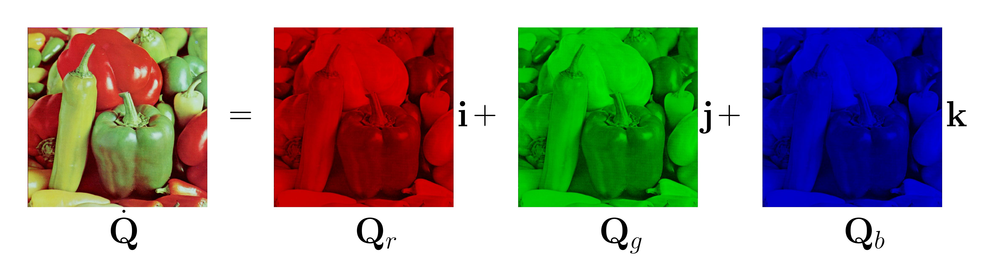
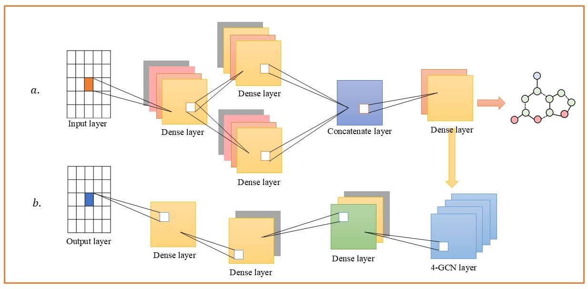
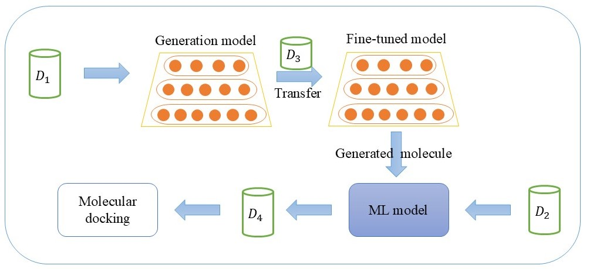
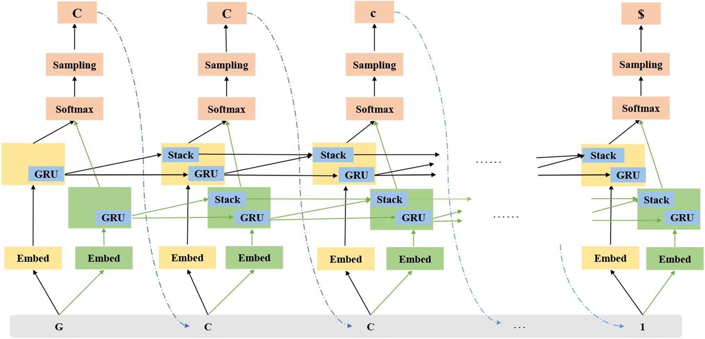

Jinping Zou
My name is Jinping Zou (邹金坪). I am currently a Ph.D. candidate in the School of Mathematics and Computer Science at Nanchang University. I received my B.S. degree in Mathematics from the School of Mathematical Sciences, Jinggangshan University, and my M.S. degree in Applied Mathematics from the School of Mathematics and Computer Science, Nanchang University.
My research interests include Deep Learning, Quaternion Algebra, Image Processing, and Bioinformatics.
Email: 359100230009 [at] email.ncu.edu.cnAddress: School of Mathematics and Computer Science, Nanchang University, Jiangxi, China
More info: [Resume], [Google Scholar], [GitHub].
Highlights
- 2026.01: Still working hard and moving forward.
- 2026.01: My second paper on color image processing was published in Pattern Recognition.
- 2025.10: The first paper on color image inpainting based on quaternion algebra was accepted.
- 2025.01: Fortunately selected for the CAST Young Talent Support Program for Ph.D. Students.
- 2024.10: Started research on quaternion algebra and color image processing.
- 2024.01: Work focused on deep clustering, but it did not lead to any research outputs.
- 2023.11: Two papers on deep learning and drug molecule generation have been published.
- 2020.09: Started research in bioinformatics and deep learning.
Experience
|
2023.09—Present: |
Ph.D. Candidate |
|
| Graduated | ||
|
2020.09—2023.06: |
M.S. Candidate |
|
|
2016.09—2020.06:
|
B.S. Candidate
|
Projects & Publications

|
|
|
 |
|
|
 |
|
|
 |
|
|
 |
De novo drug design based on Stack-RNN with multi-objective reward-weighted sum and reinforcement learning
Journal of Molecular Modeling
Pengwei Hu, Jinping Zou, Jialin Yu, and Shaoping Shi
[Paper]
|